Where is the data?
- A database can be located in many places.
- within your Android device (a "local database")
- on a remote web server
- spread throughout many remote servers ("in the cloud")
- Today we will learn to create and use remote databases.
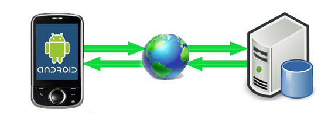
Setting up remote database
- A remote database is hosted on a web server.
- Server is often called the app's "back-end".
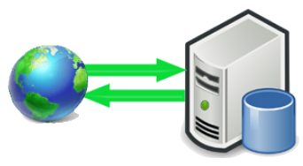 - One option: Do-it-yourself
- buy web hosting (e.g. DreamHost; GoDaddy)
- use their tools to create/add a database
- DreamHost: MySQL (create using web panel)
- populate the database
- import .sql file, etc.
- set up permissions and authentication
- create user account(s), passwords
- modify your app to connect to remote database
- use JDBC (Java Database Connectivity) connector
Problems with remote server
- While running your own remote database can work well, it also has potential drawbacks:
- cost: have to pay to get hosting from DreamHost etc.
- administration: must set up/maintain database, server yourself
- security: attacker with password can connect to database
- privacy: must block user from seeing other users' info
- robustness: database isn't automatically backed up, protected
- scaling: too many users querying server will slow it down
- ...
BaaS web platforms
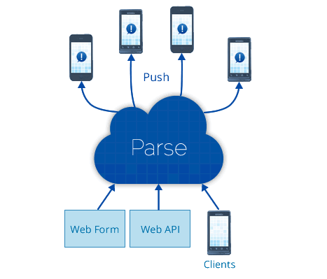
- BaaS (Backend as a Service): Platforms for database/service hosting, management, deployment, etc.
- examples:
Parse(RIP), Firebase, Google App Engine, Amazon Web Services Mobile, Azure, Kinvey, Kumulos, Backendless, ...
- examples:
- Features of BaaS platforms:
- web UI for creating accounts, databases, users, etc. as needed
- API of classes and objects to query the data in many platforms
- web app, Android, iOS, ...
- saves the developer from having to buy and manage servers/DBs
- often built to scale up to very large sizes / traffic loads if needed
- many BaaS platforms do not explicitly use SQL and instead have the user perform queries using various methods and parameters
NoSQL databases
- NoSQL database: Does not store data into tables and does not use SQL.
- became popular in mid-2000s
- benefits: simplicity; flexibility; "horizontal" scalability to many servers
- drawbacks: less standardized; data inconsistency/loss; lack "ACID"
- Types of NoSQL databases
- column stores (Cassandra, Vertica, Druid, Accumulo)
- document stores (MongoDB, CouchDB, Qizx, MarkLogic, Hyperdex)
- key/value stores (Memcached, Scalaris, Voldemort, Dynamo)
- data structure servers (Redis)
- graph stores (Allegro, Neo4J, Virtuoso, MarkLogic)
Firebase
- Firebase: BaaS / remote database management platform built by SF-based Google subsidiary.
- a "real-time synchronized cloud database"
- one of the strongest successors / replacements for now-dead Parse
- Key features
- API to access data from Android, iOS, Java, JavaScript, Obj-C, Node.js
- REST API with libraries for many common web JS frameworks
- ability to keep data in sync, receive notifications on data changes
- cloud scaling, can handle tons of requests if needed
- other features: web hosting, login/auth, ...
How Firebase stores data
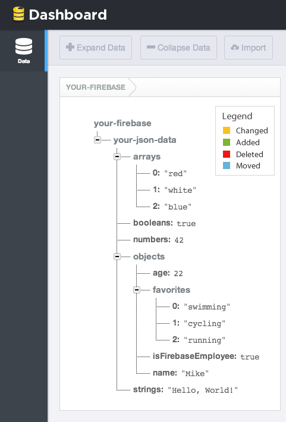
- The database is a giant nested map of string keys to values.
- text, numbers, boolean, lists, or maps
- object: {"key" => value} map
- list: {index => value} map
- overall database is tree-like map structure you can view on the web
Set up Firebase (link)
- sign up for free user account
- install Firebase into Android Studio project
- option 1: use UI: Tools → FireBase → Realtime Database → ...
- option 2: do it yourself (next slide)
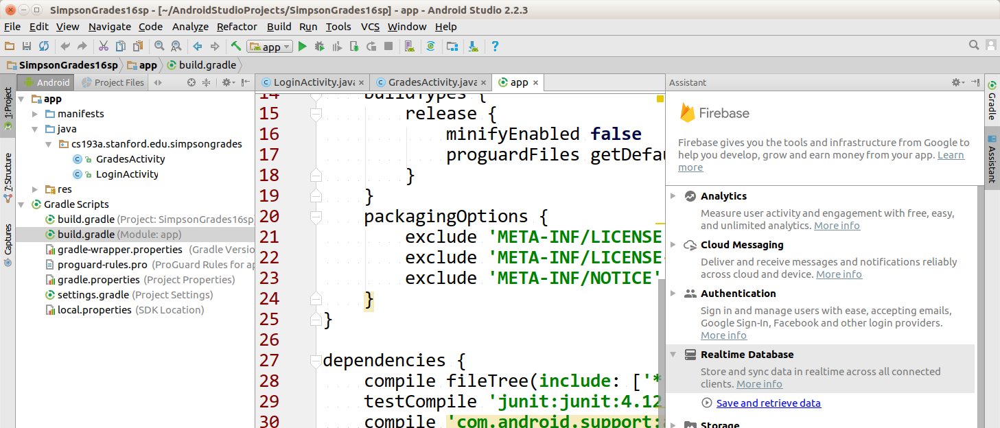
DIY Firebase setup
- modify app build.gradle
dependencies { ... compile 'com.google.android.gms:play-services:10.0.1' // add this line compile 'com.google.firebase:firebase-database:10.0.1' // add this line compile 'com.google.firebase:firebase-auth:10.0.1' // add this line } apply plugin: 'com.google.gms.google-services' // add this line (at end!) - modify module build.gradle
buildscript { ... dependencies { ... classpath 'com.google.gms:google-services:3.0.0' // add this line - get google-services.json file from Google Firebase web site
- Sign in to Firebase; open project; Click Project settings; In Your apps card, select package name of app; Click google-services.json.
Writing Firebase data
// create a key/value pairing
DatabaseReference fb = FirebaseDatabase.getInstance().getReference();
fb.child("name").setValue(value);
- Firebase stores data as key/value pairs
- the keys are strings representing data object names
- the values can be one of many types:
Boolean,Long,Double,List,Map<String, Object>- think of Firebase as a
HashMapon steroids in the cloud
DatabaseReference methods
| Method | Description |
|---|---|
dbr.child("name") |
return child object with given name (creates if missing) |
dbr.getKey() |
return key for a given data value |
dbr.getParent() |
return data one level up in the map |
dbr.getRoot() |
return data at top of map |
dbr.push() |
create/return an auto-created new child |
dbr.removeValue(); dbr.removeValue(handler); |
delete value associated with this key |
dbr.runTransaction(handler); |
run multiple queries in sequence |
dbr.setPriority(priority); |
gives this data a 'priority' rating for sorting |
dbr.setValue(value); dbr.setValue(value, handler); dbr.setValue(value, |
sets new data value, with optional listener to be notified when sync is complete |
dbr.updateChildren(map); dbr.updateChildren(map, |
updates some of object's fields ("children") using the key/value data in the given map |
SQL → Firebase mapping
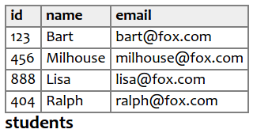

- Recall the simpsons database's students table.
- Firebase key/value data might look like this:
DatabaseReference fb = FirebaseDatabase
.getInstance().getReference();
DatabaseReference table = fb.child("simpsons/students");
DatabaseReference bart = table.child("123");
bart.child("id").setValue(123);
bart.child("name").setValue("Bart");
bart.child("email").setValue("bart@fox.com");
Firebase milhouse = table.child("456");
milhouse.child("id").setValue(456);
milhouse.child("name").setValue("Milhouse");
milhouse.child("email").setValue("milhouse@fox.com");
Set value with callback
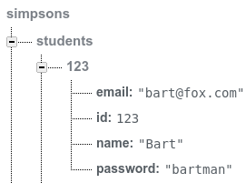
- When you call
setValue, the data may not update immediately on the server.- Your data might be distributed across many servers; it takes time to sync them.
- To be notified when the data is fully written:
DatabaseReference fb = ...;
DatabaseReference bart = fb.child("simpsons/students/123");
bart.child("name").setValue("Bart");
// or, if you want to be notified when it completes
bart.child("name").setValue("Bart",
new DatabaseReference.CompletionListener() {
public void onComplete(DatabaseError err, DatabaseReference ref) {
if (err == null) { ... }
}
});
Auto-generated keys
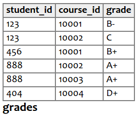
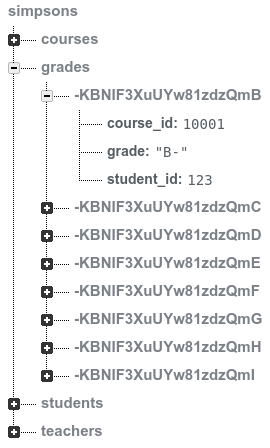
- Some tables don't have an "id" column.
- Firebase can make up IDs with
push(). - Also useful in highly parallel situations where many users modify the data at once.
- Firebase can make up IDs with
DatabaseReference fb = ...;
DatabaseReference table = fb.child("simpsons/grades");
DatabaseReference newGrade = table.push();
newGrade.child("student_id").setValue(123);
newGrade.child("course_id").setValue(10001);
newGrade.child("grade").setValue("B-");
Save/load your own classes
- If you write your own Java classes, you can store their objects in Firebase as long as:
- class has a no-params () constructor
- every field has a
getFieldName()method
public class Student {
private int id;
private String name;
private String email;
public Student() {}
public Student(int id, String name, String email) { ... }
public int getID() { return id; }
public String getName() { return name; }
public String getEmail() { return email; }
}
...
DatabaseReference fb = ...;
DatabaseReference table = fb.child("simpsons/students");
Student bart = new Student(123, "Bart", "bart@fox.com");
table.child("123").setValue(bart);
Retrieving data
- Getting data is more complex than setting it.
- Must grab the Firebase object for that data, and bind an event handler to it.
- Will be notified initially and on state changes.
DatabaseReference fb = ...;
DatabaseReference bart = fb.child("simpsons/students/123");
bart.addValueEventListener(new ValueEventListener() {
@Override
public void onDataChange(DataSnapshot data) {
// do something with data
Log.v("fb", data.getKey() + ": " + data.getValue());
}
@Override
public void onCancelled(DatabaseError databaseError) {
// report/log the error
}
});
// Bart's email: bart@fox.com, Bart's id: 123, ...
DataSnapshot methods
| Method | Description |
|---|---|
ds.child("path") |
returns child for given key |
ds.exists() |
true if this data value is non-null |
ds.getChildren() |
returns iterable list of children (use with for-each loop) |
ds.getKey() |
returns key used to fetch this data snapshot |
ds.getPriority() |
priority of this data's root node |
ds.getRef() |
returns reference to Firebase object |
ds.getValue() |
returns data associated with this snapshot's key |
ds.getValue(class) |
returns data, converted into the given class
(must have a () constructor and public get methods) |
ds.hasChild("path") |
true if the given child node/path exists in this data |
ds.hasChildren() |
true if this snapshot contains any data |
ds.toString() |
text representation of all the data |
Types of data events
| Method | Description |
|---|---|
fb.addValueListener(ValueEventListener); |
listen to changes in a data value |
- onDataChange(snapshot) |
|
- onCancelled(error) |
|
fb.addListenerForSingleValueEvent( |
get initial data and then stop |
fb.addChildListener(ChildEventListener); |
listen to changes to the children of a given data value |
- onChildAdded(snapshot, name) |
|
- onChildChanged(snapshot, oldName) |
|
- onChildRemoved(snapshot, oldName) |
|
- onChildMoved(snapshot, oldName) |
|
- onCancelled(error) |
View data as a class
- examine the data value as an object rather than each piece separately
DatabaseReference fb = ...;
DatabaseReference bart = fb.child("simpsons/students/123");
bart.addValueEventListener(new ValueEventListener() {
@Override
public void onDataChange(DataSnapshot data) {
Student stu = data.getValue(Student.class);
Log.v("fb", stu.name + ", " + stu.email);
}
...
});
public class Student {
String email;
int id;
String name;
String password;
public Student() {}
}
Viewing changes to data
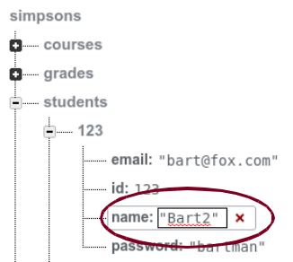
- When your app binds to a piece of data, it will be notified any time that data is changed from anywhere in the world.
- This is extremely powerful!
- Keep all users in sync on changes to an important piece of data in your db.
- Can change the data from your app, another user's copy of the app, from the Firebase web console, ...
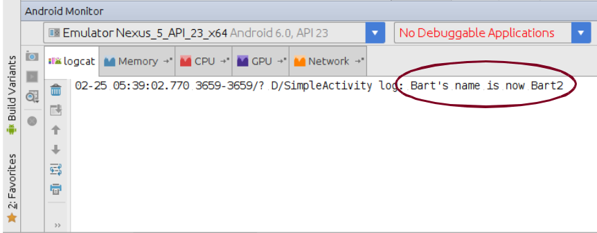
Querying data
- How do we do queries like we can in SQL?
- Done using
Query, ordering, ranges, etc. - Best illustrated by examples:
- Done using
DatabaseReference fb = ...;
DatabaseReference students = fb.child("simpsons/students");
// SQL: SELECT * FROM students WHERE id >= 500;
Query query1 = students.orderByKey().startAt(500);
query1.addListenerForSingleValueEvent(
new ValueEventListener() {...});
// SQL: SELECT * FROM students WHERE name LIKE "B%";
Query query2 = students.orderByChild("name")
.startAt("B").endAt("Bz");
query2.addListenerForSingleValueEvent(
new ValueEventListener() {...});
Querying data, more detail
DatabaseReference fb = ...;
DatabaseReference students = fb.child("simpsons/students");
// SQL: SELECT * FROM students WHERE id >= 500;
Query query1 = students.orderByKey().startAt(500);
query1.addListenerForSingleValueEvent(new ValueEventListener() {
public void onDataChange(DataSnapshot dataSnapshot) {
// print each k/v pair as a log message
for (DataSnapshot student : dataSnapshot.getChildren()) {
Log.v("fb", "student " + student.getKey() + " => "
+ student.getValue());
}
}
});
Query methods
| Method | Description | SQL |
|---|---|---|
q.endAt(value) q.endAt(value, "key") |
specify last value to include, or last value for a given key to include | <= |
q.equalTo(value)
q.equalTo(value, "key") |
specify only value to include | = |
q.limitToFirst(count)
q.limitToLast(count) |
only show first/last N results | LIMIT N |
q.orderByChild("name") |
sort/filter results by given child key | ORDER BY |
q.orderByKey() |
sort/filter results by their key | |
q.orderByPriority() |
sort/filter by priorities set manually | |
q.orderByValue() |
sort/filter by their own values | |
q.startAt(value)
q.startAt(value, "key") |
specify last value to include, or last value for a given key to include | >= |
Security and authentication
- There are several ways to allow/deny access to your database
- Firebase-specific accounts; Google accounts; etc.
- Use Firebase web UI to add email/password user accounts
- Modify code to sign in with email and password:
private FirebaseAuth mAuth;
mAuth = FirebaseAuth.getInstance();
mAuth.signInWithEmailAndPassword("username", "password");
// optional: addOnCompleteListener, addAuthStateListener
FirebaseAuth methods
| Method | Description |
|---|---|
createUserWithEmailAndPassword("email", "pw") |
create new account |
signInWithEmailAndPassword("email", "pw") |
log in a standard user |
signInWithCredential(auth) |
log in using access creds |
signInAnonymously() |
log in as anon. user |
signInWithCustomToken("token") |
log in with an auth token |
signOut() |
disconnect |
getCurrentUser() |
return active user account |
Lib: SimpleFirebase

| Method | Description |
|---|---|
get("path") get("path", listener) get(query, listener)
|
retrieve data at given DB path |
isSignedIn() |
returns true if logged in |
push("path")
|
adds new child by unique random ID |
pushById("path", value) pushById("path", value, listener)
|
adds new child by sequential numeric ID |
query("path") |
return child of query on given path |
set("path", value) set("path", value, listener)
|
modify data at given DB path |
setLogging(bool) |
enable/disable log statements |
signIn("email", "pw") signIn("email", "pw", listener)
|
log in to Firebase |
signOut() |
log out |
transaction("path") transaction("path", listener) |
perform a locked transaction on the data |
watch("path") watch("path", listener) watch(query, listener)
|
retrieve and watch data at given DB path; updates when data on server changes |
with(activity) |
get a SimpleFirebase object |
SimpleFirebase listeners
- pass a listener to respond to completion of any call
- or make your activity implement
___Listener
- or make your activity implement
| Interface | Method | Description |
|---|---|---|
GetListener |
onGet |
called when get/watch data arrives |
SignInListener |
onSignIn |
called when signIn completed |
SetListener |
onSet |
called when set is complete |
ErrorListener |
onError |
called when db operations fail |
// style 1: make activity implement listener
SimpleFirebase.with(this).get("foo/bar/baz/42");
...
public void onGet(String path, DataSnapshot data) {
// do something with the data
}
// style 2: pass inner anon. listener
SimpleFirebase.with(this).get("foo/bar/baz/42",
new SimpleFirebase.GetListener() {
public void onGet(String path, DataSnapshot data) {
// do something with the data
}
});
SimpleFirebase examples
public class MyActivity implements SimpleFirebase.GetListener {
...
SimpleFirebase.with(this)
.signIn("email", "password"); // log in to db
SimpleFirebase.with(this)
.get("foo/bar/baz/42"); // get node at path "foo/bar/baz/42"
...
public void onGet(String path, DataSnapshot data) {
// do something with the data
}
SimpleFirebase.with(this) // set path "foo/bar/baz/42" to "abc"
.set("foo/bar/baz/42", "abc");